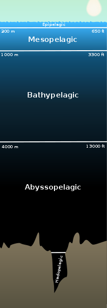

Hadalpelagic Zone
Fun information about the "Trenches"

About the Trenches
The Hadalpelagic Zone, or Trench Zone, is a subzone of the deepest zone in the ocean: the
Abyssopelagic Zone.
This subzone comes 'below' the abyss. The depth ranges from about 19,700 feet to the very bottom at 36,070 feet and can cause high pressure of 8 tons per square inch at the bottom. Because no sunlight at all can reach this subzone, the waters at the bottom of the ocean have tempuratures just above freezing.
There are 50 major trenches throughout our oceans.
One of the most famous is the Mariana, which is the deepest recorded point in the ocean. It measures at 1,580 miles long and an average of 43 miles wide. It is located off of the coast of Japan.
Another is the Challenger Deep Trench located southwest of Guam in the Pacific Ocean. Single-celled organisms, called
foraminifera
which are a type of plankton, were discovered here!
The deepest found fish was found in the Puerto Rico Trench. It is called the Abyssobrotula galatheae and was discovered at 27,460 feet.
Learn more about the Hadalpelagic Zone at these sites:
NWS Jetstream - Layers of the Ocean
National Geographic - All About the Ocean
World Atlas - The 5 Layers of The Ocean